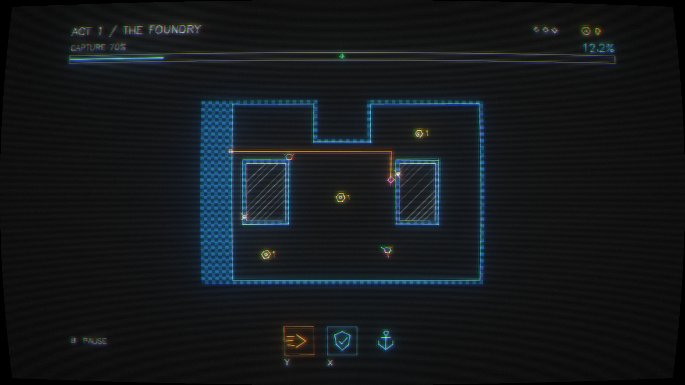
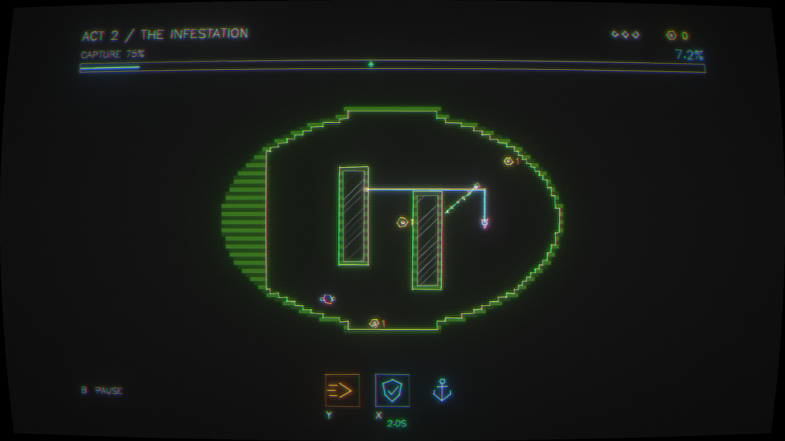
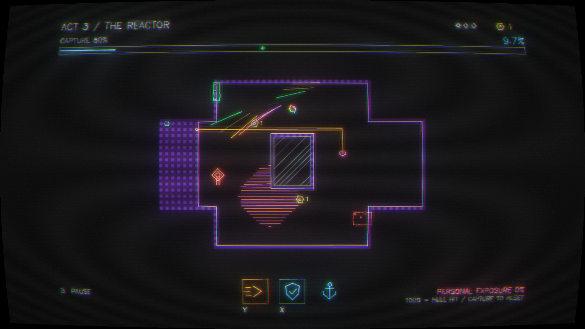
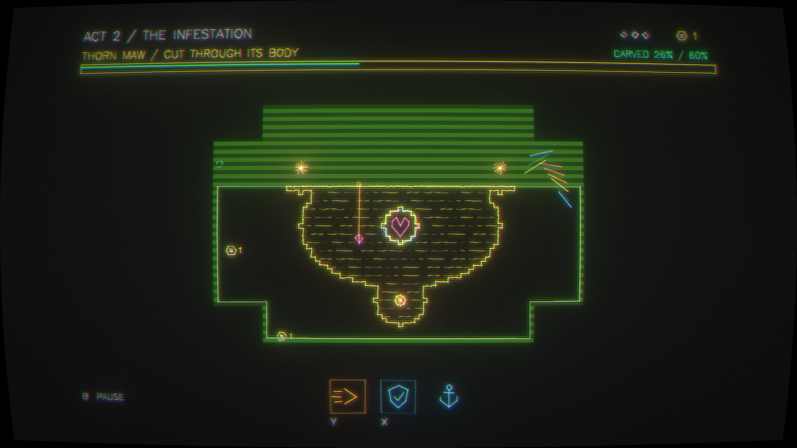
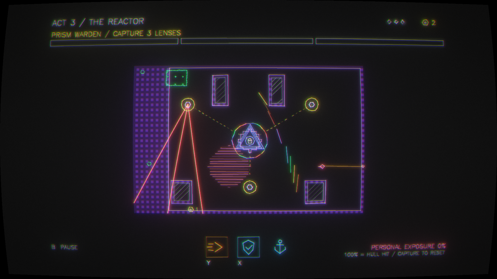
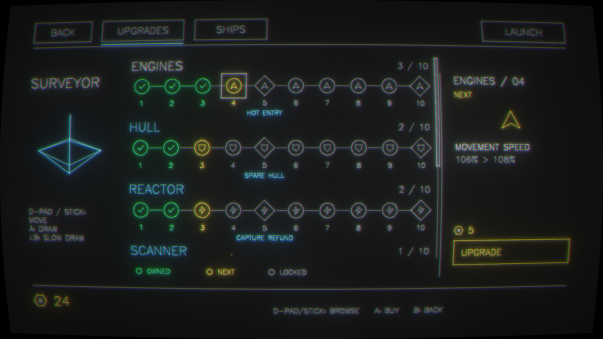
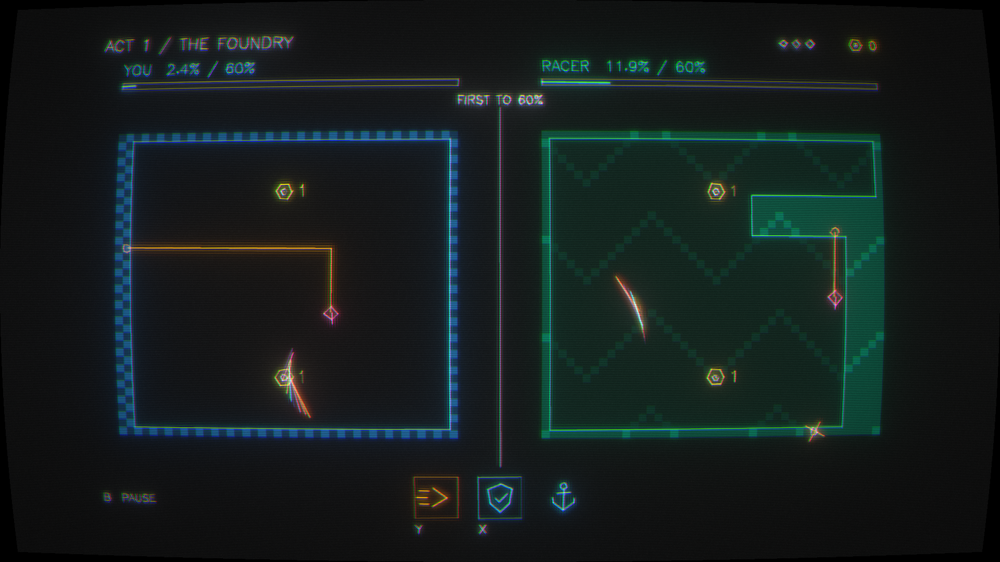
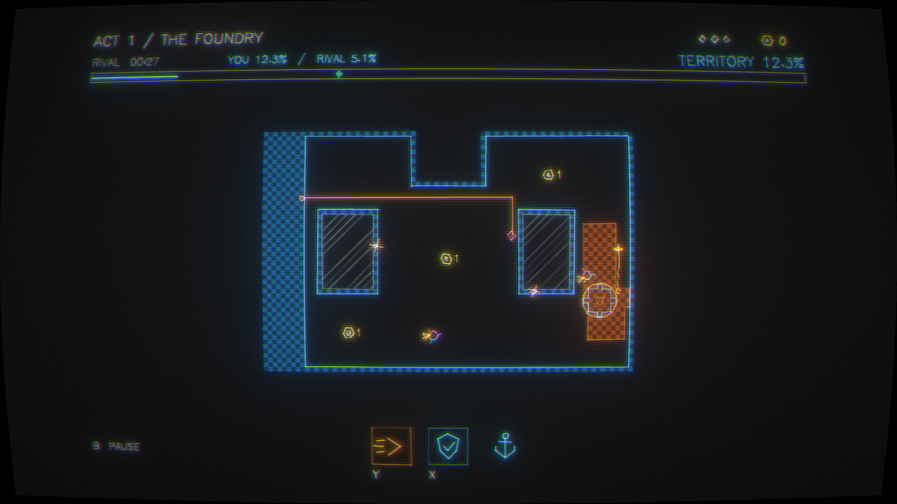

STORE MATERIALS · 10 SEPTEMBER 2026
GALAXTIX
Reclaim your empire. One cut at a time.
Eight roguelite screenshots
1920 × 1080 · Captured in-engine · Click to view full size

01 / THE FOUNDRY — Surveyor, blue checker territory

02 / THE INFESTATION — Lancer, Hardlight, green stripes

03 / THE REACTOR — Bulwark, violet territory

04 / THORN MAW — Cut through its exposed body

05 / PRISM WARDEN — Split beams and protected core

06 / UPGRADES — Spend salvage on permanent ship improvements

07 / RACE — Separate arenas, first to the capture target

08 / RIVAL — Shared territory, safe zone, countdown
Capsule art concept
Compare backgrounds, territory fills, and title treatments →
AI-generated mockup based on the game's vector and CRT style. Native concept size: 1658 × 949. Exact Steam capsule exports remain to be made.
 GALAXTIX / Capsule concept · Generation prompt
GALAXTIX / Capsule concept · Generation prompt